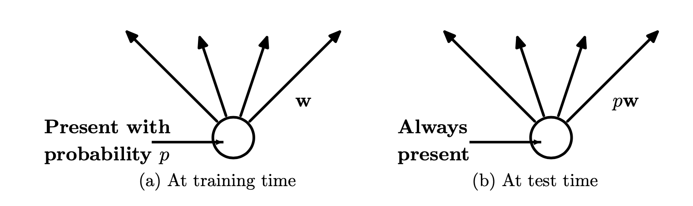

The whole idea
Dropout is the technique that is widely used to reduce the negative effects of overfitting your model. This paper introduces the idea of regularization and how L1 and L2 regularization are techniques to reduce overfitting, while dropout is a new novel technique that approaches the problem differently.
The main idea of dropout is shown below:

The key to understanding dropout is knowing that training and test are treated differently. At training time, the hidden and visible units are probabilistically removed with a probability of p (typically p = 0.5) from the network. So all inputs are ignored, and its output is ignored.
Then at training time, you utilize all activations, but you multiply them by the p value in order to have regularly weighted results, as the activations will be thinned from the training dropout.
Intuition
The main intuition the paper proposes is the attempt to train many different models independently and then average their results. The reality is that large models take a lot of data to train effectively, and much compute. By sharing some aspects of the models together, dropout is effectively creating a large number of “thinned” models, which then can be averaged together into a single model. By having these number of “thinned” models, you achieve better results than having a single thick model.
That is the basics of dropout. The paper will look at a formal definition, an algorithm and results.